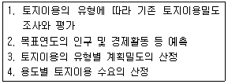

도시계획기사 (2008-05-11 기출문제)
1과목: 도시계획론
1. 도시인구의 증가 속도가 도시산업의 발달 속도보다 훨씬 커서 직장과 주택이 없는 사람들이 도시 빈민화하고 슬럼지구를 형성하며 이들이 생존을 위해 비공식 경제부문에 종사하는 등 도시경제의 잉여부분에 기생하면서 살아가야 하는 현상을 무엇이라고 하는가?
- 젠트리피케이션
- 역도시화
- 가도시화
- 종주도시화
(정답률: 알수없음)

2. 린드블룸(C. Lindblom)이 주장한 점진적 계획의 특징에 대한 설명 중 옳은 것은?
- 점진적 계획은 논리적 일관성을 통해 최적의 대안을 제시하고자 한다.
- 점진적 계획에서는 최적 대안 선정을 위하여 분석의 종합성을 강조한다.
- 점진적 계획에서는 계획의 실행과 결과에 대한 인과관계가 명확히 구분되는 특징을 갖는다.
- 점진적 계획은 최적의 해결 대안을 제시하기 보다는 지속적인 조정과 적응을 통해 계획의 목표를 추구하는 방법을 모색하는 특징을 갖는다.
(정답률: 알수없음)
3. 어떤 도시의 수출승수(Export Multiplier)의 값이 2.5일 때, 도시 내에서 생산된 제품의 수출량이 2배로 증가하였다면 이로 인한 도시 전체 경제 규모의 변화는?
- 도시 경제 규모는 2배로 증가한다.
- 도시 경제 규모는 2.5배로 증가한다.
- 도시 경제 규모는 4.5배로 증가한다.
- 도시 경제 규모는 변함없다.
(정답률: 알수없음)
4. 다음 중 토지이용계획의 역할로 알맞지 않은 것은?
- 도시의 외연적 확산을 촉진시킨다.
- 토지이용의 규제와 실행수단을 제시해 준다.
- 계획적인 개발을 유도하여 난개발을 억제시킨다.
- 토지이용계획을 통해 도시의 현재와 장래의 공간구성과 토지이용 형태가 결정된다.
(정답률: 알수없음)
5. 다음 중 경관녹지의 설치 목적은?
- 공해의 방지 및 완화
- 재해의 방지 및 완화
- 자연환경의 보전과 개선
- 도시인에게 여가와 휴식을 제공
(정답률: 알수없음)
6. 고대 메소포타미아와 이집트의 도시에서 시작되었던 것을 히포다무스(Hippodamus)가 그리스의 도시계획에 적용시킨 것은?
- 격자형 가로망
- 공공시설의 중앙배치
- 공중정원의 설치
- 성곽의 축조
(정답률: 알수없음)
7. 지속가능한 도시가 추구하여야 할 기본 목표가 아닌 것은?
- 환경부하가 높은 자연공생형 도시
- 도시경관의 개선 및 보전
- 환경친화적 교통·물류체계의 정비
- 쾌적한 도시공간의 정비 및 확보
(정답률: 알수없음)
8. 인구는 도시계획의 가장 기본적인 지표로 이용된다. 다음 중 과거의 인구변화 추이가 미래에도 계속될 것이라는 가정 아래 과거의 추세를 연장하여 장래의 인구를 추정하는 방법에 속하지 않는 것은?
- 등차급수법
- 등비급수법
- 로지스틱 곡선법
- 집단생잔법
(정답률: 알수없음)
9. 교통계획의 4단계 수요추정법에서, 두 번째 단계인 통행분포(Trip Distribution) 단계에서 사용하는 분석모형이 아닌 것은?
- 회귀분석모형
- 성장인자모형
- 중력모형
- 기회모형
(정답률: 알수없음)
10. 다음 중 20년을 단위로 하는 장기계획으로서 둘 이상의 도시공간의 구조 및 기능을 상호 연관시키고 환경을 보전하며 광역시설을 체계적으로 정비하기 위한 계획은?
- 도시기본계획
- 국토계획
- 도시재정비계획
- 광역도시계획
(정답률: 알수없음)
11. 샤핀(F. S. Chapin, 1965)이 제시한 토지이용의 결정요인에 해당하지 않는 것은?
- 공공의 이익요인
- 경제적 요인
- 문화적 요인
- 사회적 요인
(정답률: 알수없음)
12. 도시기본계획과 비교했을 때 도시관리계획의 특징을 잘못 설명한 것은?
- 목표-지향적(Goal-Oriented)이다.
- 구체적인 개발계획의 역할을 한다.
- 개별시민에게 구속력을 갖는다.
- 사업시행계획의 지침 제시와 건축행위의 규제를 목적으로 한다.
(정답률: 알수없음)
13. 정주체계이론은 1차산업, 2차산업, 3차산업의 입지이론으로 나눌 수 있다. 다음 중 3차산업의 입지이론으로 나눌 수 있다. 다음 중 3차산업의 입지이론이라고 불리는 것은?
- 동심원이론
- 중심지이론
- 최소비용법
- 순위규모법칙
(정답률: 알수없음)
14. 20세기 이후에 발표된 도시계획헌장들 중, 최초의 도시계획 헌장으로서 이후 전 세계 도시계획 및 설계분야의 발전에 많은 영향을 미친 것은?
- 뉴어바니즘(New Urbanism)헌장
- 메가리드(Megaride)헌장
- 아테네(Athens)헌장
- 맞추피추(Machu-Picchu)헌장
(정답률: 알수없음)
15. 도로망은 도시의 기능을 수행하기 위한 기본적인 시설로서 지형조건과 도시(시가지)의 형태 등에 따라 패턴이 달라진다. 다음 도로망에 대한 설명 중 틀린 것은?
- 격자형은 지형이 평탄한 도시에 적합하며 고대 및 중세 봉건 도시에서 흔히 볼 수 있다. 대표적인 도시로는 뉴욕과 필라델피아를 들 수 있다.
- 방사형은 중심지를 기점으로 주요간선로를 따라 도시개발축이 형성된다.
- 방사환상형은 횡적인 연결은 환상선으로, 도심부와 교외 및 외곽은 방사선으로 연결하는 형태로, 도쿄와 파리가 대표도시이다.
- 혼합형은 두 가지 이상 혼합된 형으로, 도심부는 방사환상형이고 교외부는 격자형이 대부분이다.
(정답률: 알수없음)
16. 일반적으로 기성시가지에 적용되는 토지이용의 수요추정 과정을 바르게 나열한 것은?

- 1 - 2 - 3 - 4
- 1 - 3 - 2 - 4
- 2 - 1 - 3 - 4
- 1 - 2 - 4 - 3
(정답률: 알수없음)
17. 성장관리에 대해서 주 및 자치제가 자신의 행정구역에 있어서 장래 개발의 속도, 양, 형태, 위치, 질에 의도적인 영향을 주고자 하는 것으로 정의를 내린 학자는?
- J. Gottmann
- P. Healey
- D. Godshalk
- H. Hoyt
(정답률: 알수없음)
18. 환지방식에 의한 도시개발사업의 문제점이 아닌 것은?
- 대규모 토지소유자에 대한 소유권의 침해가 크다.
- 사업의 진행에 따라 투기적 매입자들이 개입하고 현저한 지가상승으로 토지소유자들이 불로소득을 얻을 경우 조성된 택지가 장기간 공한지로 남을 수 있다.
- 공공감보(公共減步)에 대한 명확한 기준이 없기 때문에 공공감보가 수익자 부담인지, 기부금이나 개발부담금에 상당하는 것인지 또는 개발이익의 사회적 환원인지 등 사회적 명분이 불분명하다.
- 사업 후 지가가 토지소유자들 사이에 큰 차이가 나타냄으로서 환지계획을 둘러싸고 민원 발생의 소지가 크다.
(정답률: 알수없음)
19. 도시계획의 의의와 필요성에 대한 다음 설명 중 옳지 않은 것은?
- 도시의 여러 가지 기능을 원활하게 해 준다.
- 주민들이 생활하기에 풍요롭고 양호한 환경을 만들어 준다.
- 개인 및 집단행동을 우선시하며 외부효과를 고려하는 기능이 있다.
- 공공 및 민간활동의 분배효과를 고려하는 사회적 기능을 수행한다.
(정답률: 알수없음)
20. 다음 중 도시 및 주거환경정비법에 의한 정비사업이 아닌 것은?
- 주거환경개선사업
- 아파트지구개발사업
- 주택재개발사업
- 주택재건축사업
(정답률: 알수없음)
2과목: 도시설계 및 단지계획
21. 도시인구가 20만인이고 취업률 30%, 제조업인구구성비가 25%, 제조업인구 1인당 점유토지면적이 300m2이다. 이 때 공업지의 총 소요면적은? (단, 공공용지율은 40%임)
- 600ha
- 750ha
- 900ha
- 1100ha
(정답률: 알수없음)
22. 도로의 양측에 주차장을 계획할 경우에 토지 이용상 가장 효율적인 주차방식은?
- 직각주차
- 평행주차
- 45° 주차
- 60° 주차
(정답률: 알수없음)
23. 다음의 공동주택단지 어린이놀이터에 관한 내용 중 틀린 것은?
- 100세대 이상인 경우에는 300m2(시·군지역은 200m2)에 100세대를 넘는 매 세대마다 1m2(시·군지역은 0. 7m2)를 더한 면적 이상의 어린이놀이터를 설치하여야 한다.
- 어린이놀이터는 그 폭을 9m(면적이 150m2 미만인 경우에는 6m)이상으로 하여야 한다.
- 어린이놀이터에는 놀이시설 기타 필요한 시설을 설치하되, 안전성을 확보할 수 있는 강도와 내구성을 갖춘 재료를 사용하여야 한다.
- 어린이놀이터는 100세대 미만의 주택단지일 경우에는 매 세대당 5m2(시·군지역은 3m2)의 비율로 산정한 면적 이상이어야 한다.
(정답률: 알수없음)
24. 주거단지계획시 생활권의 단계와 생활 시설배치의 관계로 가장 알맞은 것은?
- 생활권의 단계에 따라 시설의 종류와 규모를 달리한다.
- 시설의 종류는 동일하고 생활권의 단계에 따라 규모를 달리한다.
- 생활권의 단계와 관계없이 초등학교는 항상 1개소 이상 둔다.
- 생활권의 단계와 관계없이 도보거리 500m를 기준으로 시설을 배치한다.
(정답률: 알수없음)
25. 단지계획의 수립과정 중 기본구상 및 대안설정단계에서 수행되는 계획내용은 무엇인가?
- 분양계획
- 부문별 기본계획
- 자연·인문환경분석
- 기본골격작성
(정답률: 알수없음)
26. 다음 중 단지계획의 목표설정시에 고려하여야 할 일반적인 사항과 가장 거리가 먼 것은?
- 건강과 쾌적성
- 경제적 다양성
- 기능의 충족성
- 이웃과의 의사소통
(정답률: 알수없음)
27. 다음 중 환경 설계 평가시 고려해야 할 사항으로 프리드만(John Friedmann)이 제시한 내용이 아닌 것은?
- 물리적·사회적 환경
- 주변환경
- 설계과정
- 경제적 환경
(정답률: 알수없음)
28. 지구단위계획 수립 시 환경관리계획의 목표에 맞지 않는 것은?
- 개발로 인한 자연환경 피해의 최소화
- 자연생태계 보존 및 순환체제의 유지
- 자연에너지 활용 및 에너지 절감
- 불투수포장의 확대로 인한 물순환체계의 유지
(정답률: 알수없음)
29. 단지계획에 있어서 인동간격의 결정요소가 아닌 것은?
- 일조
- 도로
- 프라이버시
- 조망
(정답률: 알수없음)
30. 바람직한 도시경관을 형성하기 위해서 건축물의 높이기준이 제시된다. 이 때 최고높이 규제가 필요한 경우에 해당하지 않는 경우는?
- 도로에 접한 벽면의 높이와 폭이 이루는 비율을 적절하게 형성하고 건축물의 높이에 균일성을 주고자 하는 경우
- 주변경관이나 가로경관과 조화를 이루지 못하고 어지러운 스카이라인이 형성될 것이 예상되는 경우
- 이면도로 또는 주거지의 경계에 대규모 건축물이 들어섬으로써 이면도로에 과부하를 주거나 주거환경에 침해를 주는 것이 예상되는 경우
- 간선도로변 또는 주요 결절점에 가설건물, 소규모 및 저층건축물이 난립하여 적정 토지이용 밀도를 유지하지 못하거나 경관 저해가 현저하게 발생될 경우
(정답률: 알수없음)
31. 100ha의 토지에 단독주택 단지를 계획하고자 한다. 1필지의 규모가 평균 200m2이고, 공공용지율이 40%일 때 순인구밀도는 얼마인가?(단, 1호, 1세대당 4인 가족)
- 83 인/ha
- 180 인/ha
- 200 인/ha
- 333 인/ha
(정답률: 알수없음)
32. 다음 중 슈퍼블록(Super Block)의 장점에 대한 설명으로 옳지 않은 것은?
- 래드번(Radburn) 시스템이라고 불리기도 한다.
- 건물을 집약함으로서 고층화와 효율화가 가능하다.
- 전력, 난방 등 도시시설의 공동화가 가능하다.
- 블록화로 인해 오픈스페이스의 확보가 어렵다.
(정답률: 알수없음)
33. 지구단위계획의 성격으로 옳지 않은 것은?
- 지구단위계획은 토지이용을 합리화하고 그 기능을 증진시키며 미관을 개선하고 양호한 환경을 확보하며, 당해 지역을 체계적이고 계획적으로 관리하기 위해 수립하는 도시관리계획을 말한다.
- 지구단위계획의 주계획은 아름다운 도시경관을 확보하기 위한 경관관리계획의 성격을 가진다.
- 지구단위계획구역 및 지구단위계획은 도시관리계획으로 결정한다.
- 제1종 지구단위계획은 향후 10년 내외에 걸쳐 나타날 시·군의 성장 여건 변화를 상정하여 수립하는 계획이다.
(정답률: 알수없음)
34. 제1종 지구단위계획구역의 지정목적 중에서 주차장법의 규정에 의한 주차장 설치기준을 100%까지 완화하여 적용할 수 있는 경우는?
- 지구단위계획에서 합벽건축을 하도록 계획되어 있는 경우
- 당해 지구단위계획구역이 도심지에 위치하는 경우
- 한옥마을을 보존하고자 하는 경우
- 문화재보호구역으로 지정되어 있는 경우
(정답률: 알수없음)
35. 우리나라에 상세계획제도가 도입된 것에 대한 다음 설명 중 옳은 것은?
- 2000년대 초반에 들어 처음 도입되었다.
- 도시설계제도의 한계를 보완한다는 명분으로 상세계획제도가 도입되었다.
- 상세계획은 주로 건축물의 규제에 관한 것이다.
- 상세계획은 도시설계제도와 동일한 근거법에 의해 제도화 되었다.
(정답률: 알수없음)
36. 다음 제2종지구단위계획에 대한 설명으로 옳지 않은 것은?
- 제2종지구단위계획은 계획관리지역과 개발진흥지구를 대상지역으로 한다.
- 제2종지구단위계획은 개발이 예상되는 지역을 체계적으로 개발·관리하기 위함이다.
- 제2종지구단위계획은 도시관리계획을 바탕으로 수립한다.
- 제2종지구단위계획에서의 유형은 기존시가지의 정비·관리·보전 및 신시가지의 개발 등이 있다.
(정답률: 알수없음)
37. 다음의 주택단지 계획에서 크기 순으로 옳게 표시된 것은?
- 근린주구 → 근린분구 → 인보구 → 지역(지구)
- 지역(지구) → 근린주구 → 근린분구 → 인보구
- 지역(지구) → 인보구 → 근린주구 → 근린분구
- 지역(지구) → 근린분구 → 인보구 → 근린주구
(정답률: 알수없음)
38. 다음 중 시·도에 두는 도시계획위원회와 건축위원회가 공동으로 심의해야 하는 지구단위계획의 내용이 아닌 것은?
- 건축물의 높이의 최고한도 또는 최저한도에 관한 사항
- 건축물의 배치·형태·색채 또는 건축선에 관한 계획
- 경관계획
- 건축물의 허용용도와 불허용도에 관한 사항
(정답률: 알수없음)
39. 케빈 린치(Kevin Lynch)에 의한 도시이미지를 결정하는 요소가 아닌 것은?
- 경계(Edge)
- 랜드마크(Landmark)
- 중심몰(Mall)
- 통로(Path)
(정답률: 알수없음)
40. 상업시설의 배치 형식을 크게 집중형과 노선형으로 구분할 때, 이 중 노선형의 특징이 아닌 것은?
- 모든 주민에게 균등한 접근성을 부여
- 당래 수요의 성장과 다양성에 대처할 융통성이 있음
- 도로와 거주지 사이의 소음 완충지 역할
- 시설 상호간의 유기적 관계성이 높음
(정답률: 알수없음)
3과목: 도시개발론
41. 도시마케팅에 관한 설명 중 옳지 않은 것은?
- 도시 내에 고도의 정보통신시스템을 정비하고 금융·정보산업을 비롯한 첨단기술산업을 유치하여 미래에 유망한 새로운 직장 및 생활환경을 확보하는 것을 주목적으로 한다.
- 도시마케팅의 고객은 크게 투자기업, 관광객 및 방문객, 주민으로 구분될 수 있다.
- 도시마케팅 상품은 소비를 통해 변형되거나 소멸되지 않고 내구재로서의 성격을 가지며, 이로 인해 제품의 생명주기도 뚜렷하지 않아 도시정부는 상품 자체를 시장에서 퇴출시킬 수도 없다.
- 도시마케팅 상품은 단일재가 아니라 집합적 성격의 상품을 가지는 복합재이다.
(정답률: 알수없음)
42. 1920년대에 위성도시안을 제안한 사람이 아닌 것은?
- 테일러(G. R. Taylor)
- 라딩(A. Rading)
- 기버드(F. Gibberd)
- 휘튼(R. Whitten)
(정답률: 알수없음)
43. 공공(公共)은 도시개발 과정에 여러 가지 형태로 개입한다. 다음 중 그 형태(내용)에 대한 설명으로 틀린 것은?
- 각종 토지이용규제를 통해 도시개발을 제어한다.
- 개발업자 등의 자격을 제한하는 시장진입 규제, 토지 등의 거래행위에 대한 규제, 각종 부담금 등을 통한 개발이익 분배과정에 개입한다.
- 조세정책이 아닌 금융정책을 통해서만 도시개발을 촉진시키거나 지연시키는 효과를 갖는다.
- 공부(公簿) 등을 통해 토지나 건물에 대한 권리관계를 확인·보장해 주는 역할을 담당한다.
(정답률: 알수없음)
44. 관리상 부실로 인하여 도시환경이 악화될 우려가 예견되거나 이미 악화된 지역에 대하여 기존 시설을 보존하면서 노후 및 불량화 요인만을 제거하는, 즉 부분적인 철거재개발 형식으로 구역 전체의 기능과 환경을 회복하거나 개선시키는 소극적인 재개발 시행방식은?
- 수복재개발(Rehabilitation)
- 보완재개발(Recover)
- 보전재개발(Conservation)
- 지구단위재개발(Section Development)
(정답률: 알수없음)
45. 워터프론트(Waterfront)의 특성과 가장 거리가 먼 내용은?
- 자연과 접하기 쉬운 공간이다.
- 문화나 역사가 많이 축적된 공간이다.
- 조망성이 좋다.
- 광범위한 범위의 개발이 용이하다.
(정답률: 알수없음)
46. 민관합동 부동산개발금융방식인 프로젝트파이낸싱(Project Financing)의 자금조달 형태에 관한 설명으로 틀린 것은?
- 자금원 중 자기 자본투자는 투자 회수 순위에서 가장 높은 순위를 지니므로 위험도가 가장 낮다고 할 수 있다.
- 자기 자본투자자는 전략적 투자자와 재무적 투자자로 분류되며 재무적 투자자는 사업에 의한 배당 수익에 투자목적이 있다.
- 자금원 중 선순위 채권(Senior Debt)은 프로젝트파이낸싱에서 가장 큰 비중을 차지하는 자금이다.
- 자금원 중 선순위 채권(Senior Debt)은 대부분의 상업 은행으로부터의 차입금이 이에 해당되며 이자수익을 목적으로 투자한다.
(정답률: 알수없음)
47. 주택재개발사업 시행방식의 종류에 관한 설명으로 틀린 것은?
- 자력재개발은 도로, 공원 등 도시기반시설은 공공이 설치하고, 주민은 토지구획정리사업의 환지기법을 적용하여 환지받은 토지에 각자가 건물을 짓도록 하는 방식이다.
- 순환재개발 방식은 오래된 재개발아파트부터 순차적으로 생애주기별로 재개발해 나가는 방식이다.
- 합동재개발 방식은 주민과 건설업자, 정부의 3자가 공동의 이익을 추구하는 사업으로, 점유한 국·공유지는 싸게 불하받아 주민을 수용하는 주택이외에 여유분의 주택을 지어 매각함으로써 주민은 사업비 부담을 대폭 경감할 수 있는 방식을 일컫는다.
- 위탁재개발 방식은 철거를 기본수단으로 하는 사업방식으로 정부가 건설업체를 알선하고 주민이 재정을 부담하여 5층 이하의 공동주택을 건립하는 사업이었다.
(정답률: 알수없음)
48. 도시마케팅에서 필수적인 고려사항과 가장 거리가 먼 것은?
- 도시자족성
- 도시운영성과
- 도시경쟁력
- 아이디어 및 차별성
(정답률: 알수없음)
49. 다음은 경제성 분석과 대비되는 사업성 분석에 대한 설명이다. 틀린 것은?
- 사업성 분석에서의 기본은 평가지표, 프로젝트의 비용 그리고 수입의 추정이다.
- 사업성 분석에서는 프로젝트와 관련된 세금이나 이자 또는 이전비용(Transfer Payment)에 대한 고려를 하지 않는 것이 일반적이다.
- 시간의 투자가치인 할인율은 각 기업이 직면한 환경에 따라 결정되는 재무적 할인율이 아니라 사회적 할인율이 사용된다.
- 사업성 분석에서는 프로젝트와 관련된 재화의 가치가 소위 자원의 사회적 가치를 의미하는 잠재가격(Shadow Price)이 아닌 시장가격(Market Price)이 기준이 된다.
(정답률: 알수없음)
50. 시장(Market) 및 시장분석(Market Analysis)의 개념과 필요성에 대한 설명이다. 다음 중 틀린 것은?
- 통상적으로 시장이란 상품의 수요와 공급이 만나 양과 가격이 결정되어 거래가 일어나는 곳을 말한다.
- 도시개발사업 측면에서의 시장분석이란 시장의 수요와 공급에 영향을 미치는 요인들을 분석하는 것을 말한다.
- 시장에는 현재 거래가 일어나는 실질시장(Actual Market)과 거래가 일어날 가능성이 있는 잠재시장(Potential Market)이 있는데 실질시장(Actual Market)의 파악이 특히 중요하다.
- 도시개발사업은 공공성이 강한 정책적 사업으로 상당수가 정부의 개입과 통제를 축으로 시장의 수급이 이루어 진다는 점에 유의해 시장분석이 이루어져야 한다.
(정답률: 알수없음)
51. 도시개발의 사업성 분석을 위한 사업성 평가 지표 중, 순현재가치(Financial Net Present Value, FNPV)에 관한 설명으로 맞는 것은?
- 순현재가치와 기업이 정한 자본비용 또는 최소 수익률을 비교하여 프로젝트의 타당성을 평가한다.
- 프로젝트로부터 발생하는 수입과 비용을 같게 만들어 주는 할인율이다.
- 순현재가치가 1보다 클 때 해당 프로젝트는 사업성이 있는 것으로 평가한다.
- 프로젝트로부터 발생하는 할인된 전체수입에서 할인된 전체 비용을 빼준 값이다.
(정답률: 알수없음)
52. 도시개발사업 아이템의 정량적 수요예측의 기법 중 상권에 대한 이론을 가장 체계적으로 정립한 것으로, 개별 소매점의 고객흡입력을 계산하는 기법은?
- 델파이법
- 중력모형
- Huff모형
- 판단결정모형
(정답률: 알수없음)
53. 도시개발사업의 각 아이템별로 수요가 어느 정도 있는지를 파악하기 위한 정량적 예측모형인 시계열분석(Time Series Analysis) 기법이 아닌 것은?
- 이동평균법
- 지수평활법
- 인과분석법
- 박스젠킨스법
(정답률: 알수없음)
54. 도시개발을 위한 자금조달수단인 지분조달방식과 부채조달방식의 비교시 부채조달방식의 단점으로 틀린 것은?
- 원리금 상환부담
- 기업의 이자비용에 대한 손비 인정이 어려워 금융비용의 증대가 초래됨
- 과도한 차입비중은 기업재무구조를 악화시켜 부실확률, 부도확률을 증대시킬 수 있음
- 중소기업의 경우 신용이 취약한 기업은 차입수단, 규모, 시기, 비용상의 애로 존재
(정답률: 알수없음)
55. 용도지역제와 획지분할규제를 근간으로 하는 미국의 종래 택지개발방식이 지니는 문제점을 극복하기 위한 제도로, 우리나라의 지구단위계획지구 또는 지구단위계획지구내의 특별설계지구와 유사한 성격을 가지고 있다고 볼 수 있는 도시 개발방식은?
- TDR
- IP
- PUD
- U-city
(정답률: 알수없음)
56. 민관합동의 부동산개발금융방식으로서 프로젝트파이낸싱(PF: Project Financing)이 있다. 다음 PF와 관련된 설명 중 틀린 것은?
- 협의의 의미로는 PF는 프로젝트 자체의 사업성과 그로부터의 현금흐름을 바탕으로 자금을 조달하는 것을 말한다.
- PF의 특징 중 하나는 비소구금융(Non-Recourse Financing)인데 여기서 비소구금융이란 투자자의 부담을 투자액 범위 내로 한정하는 방식을 말한다.
- PF의 특징 중 하나는 부외금융(Off-Balance-Sheet Financing)인제 여기서 부외금융이란 프로젝트회사의 부채가 손익계산서상에 나타남으로서 프로젝트회사의 자본감소가 사업성에 영향이 없도록 하는 것을 의미한다.
- 광의의 의미로 PF는 특정 사업의 소요자금을 조달하기 위한 일체의 금융방식을 의미하며 개발사업과 관련한 모든 금융방식을 프로젝트파이낸싱이라 부를 수 있다.
(정답률: 알수없음)
57. 다음의 도시화의 단계에서 신시가지 또는 신도시에 대한 개발 수요가 높아지는 단계는?
- 도시화 단계(Stage Of Urbanization)
- 교외화 단계(Stage Of Suburbanization)
- 반도시화 단계(Stage Of Deurbanization)
- 재도시화 단계(Stage Of Reurbanization)
(정답률: 알수없음)
58. 지속 가능한 도시개발을 위한 지속성의 요소와 가장 거리가 먼 것은?(단, Robert Goodland(1994)가 제안한 내용 기준)
- 사회적 지속성 : 문화, 역사, 제도 등
- 환경적 지속성 : 환경의 질, 생태계 용량, 자연자원 등
- 경제적 지속성 : 경제자본, 산업, 사업 등
- 기술적 지속성 : 과학, 기술개발 등
(정답률: 알수없음)
59. 다음 중 88올림픽 이후의 주택가격 폭등에 대처하기 위한 주택 대량 공급 방안으로 건설된 수도권 1기 신도시만을 나열한 것은?
- 분당, 일산, 평촌, 산본, 중동
- 분당, 일산, 과천, 상계, 목동
- 판교, 송파, 파주, 분당, 일산
- 목동, 과천, 상계, 영통, 광명
(정답률: 알수없음)
60. Calthorpe(1993)가 정리한 TOD(Transit Oriented Development)의 원칙으로 틀린 것은?
- 지상공간이 아닌 지하공간을 최대한 활용
- 주택의 유형, 밀도, 비용의 혼합 배치
- 공공공간을 건물배치 및 근린생활의 중심지로 조성
- 기존 근린지구 내에 대중 교통 노선을 따라 재개발 촉진
(정답률: 알수없음)
4과목: 국토 및 지역계획
61. 다음의 사회 현상 중 국토 및 지역계획에서 가장 중요시되는 것은?
- 인구이동 현상
- 사회계층 구조
- 국민의식 행태
- 전통문화 양식
(정답률: 알수없음)
62. 대도시권(또는 광역도시권)의 개념으로 적당하지 않은 것은?
- 대도시의 제기능이 주변지역에 영향을 미치는 공간적 범위
- 중심대도시와 기능적 연계를 지닌 일상생활권
- 중심대도시와 행정력이 영향을 미치는 직접세력권
- 중심대도시와 경제·사회·문화적으로 통합된 지역
(정답률: 알수없음)
63. 신도시의 입지로 바람직하지 않은 것은?
- 용수 공급이 가능하고 배수가 용이한 곳
- 도로·철도 등의 교통기관이 주변 도시와 연계되는 곳
- 공항·군사시설 등 개발상의 제약 요인이 적은 곳
- 대규모의 평탄지가 확보된 생산녹지
(정답률: 알수없음)
64. 다음 중 Technopolis의 구성요건이 되는 3대 존(Zone)이 아닌 것은?
- Industrial Zone
- Academic Zone
- Administrative Zone
- Habitation Zone
(정답률: 알수없음)
65. 테네시계곡 개발계획(TVA 계획)은 어느 나라의 지역 계획인가?
- 프랑스
- 영국
- 미국
- 독일
(정답률: 알수없음)
66. 다음 중 지역계획의 설명으로 틀린 것은?
- 지역문제를 개선·해결하기 위하여 설계된 연속활동
- 지역개발을 계획적이고 체계적이며 지속적으로 유도하는 활동
- 일정 행정구역 내의 지역문제만을 대상으로 하는 공간계획
- 지역주민들의 삶의 질(Quality Of Life) 향상을 위한 국토 및 지역자원의 적정한 이용, 개발, 보전계획
(정답률: 알수없음)
67. 전국의 인구는 5천만명, 전국의 섬유산업 중 종사자수가 1백만명일 때, 인구가 2백만명, 섬유산업 종사자수가 5만명인 도시의 섬유산업입지계수(LQ)는?
- 0.8
- 1.5
- 1.2
- 1.25
(정답률: 알수없음)
68. 지역계획 수립과정에서 대안평가 또는 사업의 경제적 타당성을 평가할 때 비용-편익분석법(Cost-Benefit Analysis)을 사용할 경우, 타당성을 판단하는 다음의 방법 중 틀린 것은?
- 편익/비용의 비(B/C Ratio)가 1 이상이 되어야 함
- 편익의 현재가치 합(合)에서 비용의 현재가치 합(合)을 뺀 순 현재가치(Net Present Value)가 0 이상이 되어야 타당함
- 타당성 있는 여러 사업 중에서는 편익/비용의 비(B/C Ratio)가 높은 것이 절대적으로 우선권을 가짐
- 타당성 있는 여러 사업 중에서는 투자재원이 허용하면 순 현재가치(NPV)가 높은 것에 우선권을 부여함
(정답률: 알수없음)
69. 국토계획의 성격으로 잘못된 것은?
- 정책지향적 계획
- 거시적 계획
- 지침 제시적 계획
- 구체적·실질적 계획
(정답률: 알수없음)
70. 기준년도의 인구구조를 바탕으로 장래의 출생, 사망 및 인구이동 등의 인구변화 요인을 전망하여 장래인구를 추계하는 방법은?
- 대위법
- 지수법
- 인구분단법
- 조성법
(정답률: 알수없음)
71. 인구와 기능의 수도권 집중에 따른 문제점이 아닌 것은?
- 교통난 심화
- 주택가격의 급등
- 환경 문제의 심화
- 지방자치제 실시의 지연
(정답률: 알수없음)
72. 권역을 설정하는데 가장 유용한 통계적 기법은?
- 회귀분석(Regression Analysis)
- 군집분석(Cluster Analysis)
- 분산분석(Analysis of Variance)
- 로짓모델(Logit Model)
(정답률: 알수없음)
73. 동질지역을 구분하는 방법으로 틀린 것은?
- 부드빌의 가중지수법
- 베리의 요인분석법
- 글라손의 표준편차크기법
- 크리스탈러의 중심지체계분석
(정답률: 알수없음)
74. 기반부문의 고용인구가 100명, 비기반부문의 고용인구가 200명일 경우, 기반비(A)와 기반승수(B)는 얼마인가?
- A = 0.5, B = 2.0
- A = 0.5, B = 3.0
- A = 2.0, B = 2.0
- A = 2.0, B = 3.0
(정답률: 알수없음)
75. 입지론(Location Theory)에서 제시하고 있는 산업입지에 관계하는 중요한 요소가 아닌 것은?
- 교통
- 노동
- 지가
- 시장
(정답률: 알수없음)
76. 지역소득격차를 발생시키는 외생변수가 아닌 것은?
- 1인당 소득
- 산업구조
- 노동의 질
- 노동참여율
(정답률: 알수없음)
77. 우리나라 국토계획의 필요성과 의의를 설명한 것 중 가장 거리가 먼 것은?
- 지역격차 완화 및 균형된 지역발전
- 각급 국토개발의 기본지침 제공
- 거시적 계획차원의 효율적 국토이용
- 특정지역개발의 유도와 관리
(정답률: 알수없음)
78. 인구 1,000,000명의 도시에서 총고용이 250,000명이고 기반부문의 고용자가 100,000명이다. 10년 후 기반부문의 고용자가 120,000명으로 증가할 때 인구수는?(단, 현재의 부양계수가 4.0 이나 10년 후는 3.5 이다. 부양계수 = 인구수/총고용자수)
- 1,⑤0,000명
- 1,100,000명
- 1,150,000명
- 1,200,000명
(정답률: 알수없음)
79. 지역개발이론 주창자와 이론이 제대로 연결된 것은?
- 페로우(Perroux) - 수출기반이론
- 로스토우(Rostow) - 단계적성장이론
- 미르달(Myrdal) - 성장거점이론
- 노스(North) - 지역간균형성장이론
(정답률: 알수없음)
80. 다음 중 하향식(Top Down) 개발 논리에 속하는 것은?
- 생태중심개발(Eco-Development)
- 기본수요접근(Basic Needs)
- 성장거점이론(Growth Center Theory)
- 도농통합개발(Agropolitan Approach)
(정답률: 알수없음)
5과목: 도시계획관계법규
81. 수도권 정비계획법상의 인구집중유발시설에 해당되지 않는 것은?
- 고등교육법규정에 의한 산업대학 또는 전문대학
- 산업집적활성화 및 공장설립에 관한 법률의 규정에 의한 공장으로 건축물의 연면적이 200m2 이상인 것
- 중앙행정기관 및 그 소속기관의 청사로서 건축물의 연면적이 500m2 이상인 것
- 건축법상의 일반업무시설이 주용도인 건축물로서 그 연면적이 25,000m2 이상인 것
(정답률: 알수없음)
82. 국토해양부장관이 개발제한구역을 지정할 수 있는 경우가 아닌 것은?
- 도시의 무질서한 확산을 방지할 필요가 있을 때
- 도시주변의 자연환경을 보전할 필요가 있을 때
- 국토해양부장관의 요청이 있어 보안상 도시의 개발을 제한할 필요가 있을 때
- 올림픽 등 국제행사에 대비하여 대규모 자연공간을 확보할 필요가 있을 때
(정답률: 알수없음)
83. 다음 중 도시개발사업을 시행할 수 없는 자는?
- 지방자치단체
- 도시개발사업조합
- 농업협동조합
- 대한주택공사
(정답률: 알수없음)
84. 국토의 계획 및 이용에 관한 법률 상 도시관리계획을 결정하고자 하는 때에, 중앙도시계획위원회 또는 시도도시계획위원회의 심의를 생략할 수 있는 경우는?
- 국방상 또는 국가안전보장상 기밀을 요한다고 인정될 때
- 건축물의 높이의 최고한도 또는 최저한도에 관한 사항
- 지가의 변동이 극심하거나 민심의 동요가 발생될 때
- 천재지변 등 긴급사항이 발생할 때
(정답률: 알수없음)
85. 수도권 과밀부담금의 산정기준을 바르게 설명한 것은?
- 부담금은 건축비의 100분의 7로 하되 지역별 여건에 따라 100분의 5 까지 조정할 수 있다.
- 부담금은 건축비의 100분의 7로 하되 지역별 여건에 따라 100분의 3 까지 조정할 수 있다.
- 부담금은 건축비의 100분의 10로 하되 지역별 여건에 따라 100분의 5 까지 조정할 수 있다.
- 부담금은 건축비의 100분의 10로 하되 지역별 여건에 따라 100분의 3 까지 조정할 수 있다.
(정답률: 알수없음)
86. 도시환경정비사업의 필요성에 관한 설명 중 틀린 것은?
- 상권활성화
- 부도심지개발
- 토지의 효율적 이용
- 도시기능회복
(정답률: 알수없음)
87. 다음 중 건축법상 용도별 건축물의 종류가 잘못 연결된 것은?
- 공동주택 - 기숙사, 다세대주택
- 제1종근린생활시설 - 의원, 일반목욕장
- 제2종근린생활시설 - 기원, 일반음식점
- 위락시설 - 무도장, 안마시술소
(정답률: 알수없음)
88. 도시개발구역을 지정하는 때에 시장·군수 또는 구청장이 관계서류를 최소 얼마 이상 일반에게 공람하여야 하는가?
- 14일
- 1개월
- 3개월
- 6개월
(정답률: 알수없음)
89. 도시계획사업비의 부담은 다음 중 누가 부담함에 원칙인가?
- 시장 또는 군수
- 도지사
- 사업시행자
- 국토해양부장관
(정답률: 알수없음)
90. 도시공원 시설 중 휴양시설에 해당되지 않는 것은?
- 야유회장
- 야영장
- 노인복지회관
- 전망대
(정답률: 알수없음)
91. 수도권정비계획법상 대규모개발사업의 종류가 아닌 것은?
- ⌜택지개발촉진법⌟에 의한 사업부지 면적이 100만m2 이상인 택지개발사업
- ⌜주택법⌟에 의한 사업부지 면적이 100만m2 이상인 주택건설사업 및 대지조성사업
- ⌜산업입지 및 개발에 관한 법률⌟에 의한 사업부지면적이 30만m2 이상인 산업단지개발사업 및 특수지역개발사업
- ⌜관광진흥법⌟에 의한 관광지조성사업으로서 시설계획지구의 면적이 30만m2 이상인 것
(정답률: 알수없음)
92. 시설물의 부지 인근에 단독 또는 공동으로 부설주차장을 설치할 수 있는 최대 규모는?
- 100대
- 200대
- 300대
- 400대
(정답률: 알수없음)
93. 산업단지의 종류와 지정권자의 연결이 적절하지 않은 것은?
- 국가산업단지 - 국토해양부장관
- 일반산업단지 - 시·도지사 또는 대통령령이 정하는 시장
- 농공단지 - 시장, 군수, 구청장
- 도시첨단산업단지 - 서울특별시장
(정답률: 알수없음)
94. 국토의 계획 및 이용에 관한 법률에서 미관지구의 분류 중 옳지 않은 것은?
- 중심지미관지구
- 시가화미관지구
- 역사문화미관지구
- 일반미관지구
(정답률: 알수없음)
95. 도시계획시설의 결정ㆍ구조 및 설치기준에 관한 규칙에 따른 도로의 규모별 구분 중 광로의 최소 폭원은?
- 30m
- 40m
- 50m
- 60m
(정답률: 알수없음)
96. 도시관리계획의 결정, 계획도의 작성 및 실효고시에 관한 내용으로 옳은 것은?
- 도시관리계획은 관계 지방의회의 의견을 듣고 반드시 중앙도시계획위원회의 의결을 거쳐서 결정해야 한다.
- 계획도의 작성에 있어 지형도가 간행되어 있지 않은 경우 해도, 해저지형도 등으로 지형도에 갈음할 수 있다.
- 지적이 표시된 지형도에 도시관리계획사항을 명시한 도면을 작성하는 경우, 축척 1/1,500 내지 1/3,000 로 작성해야 한다.
- 도시관리계획의 결정고시가 있는 날로부터 2년 이내에 지형도면의 고시가 없는 경우 그 2년이 되는 날로부터 효력이 상실된다.
(정답률: 알수없음)
97. 다음 중 관리처분계획의 기준에 대한 설명으로 잘못된 것은?
- 종전의 토지 또는 건축물의 면적·이용상황 등을 종합적으로 고려한다.
- 과소 또는 광대한 토지에 대해서는 이를 조정할 수 있다.
- 분양설계는 분양신청기간이 만료되기 사흘전에 한다.
- 너무 좁은 토지 또는 건축물이나 정비구역 지정 후 분할된 토지를 취득한 자에 대해서는 현금으로 청산할 수 있다.
(정답률: 알수없음)
98. 노외주차장에 설치할 수 있는 부대시설이 아닌 것은?
- 관리사무소
- 자동차관련수리 판매시설
- 노외주차장 운영상 필요한 편의시설
- 간이매점 및 자동차의 장식품판매점
(정답률: 알수없음)
99. 주택법상 주택조합의 종류가 아닌 것은?
- 지역주택조합
- 직장주택조합
- 리모델링주택조합
- 농어촌주택조합
(정답률: 알수없음)
100. 도시지역안에서 2이상의 용도지역에 걸치는 경우에 도시개발구역으로 지정할 수 있는 기준 면적을 산출하는 식으로 가장 적당한 것은?(단, 산식에 의한 면적이 1만제곱미터 이상이다.)
- 주거지역 및 상업지역의 면적 ＋ 공업지역의 면적의 3분의 1 ＋ 자연녹지 지역의 면적
- {주거지역 및 상업지역의 면적 × 공업지역의 면적의 3분의 1 × 자연녹지 지역의 면적}/100
- 주거지역 및 상업지역의 면적 ＋ 공업지역의 면적의 2분의 1 ＋ 공공녹지 지역의 면적
- {주거지역 및 상업지역의 면적 × 공업지역의 면적의 2분의 1 × 공공녹지 지역의 면적}/100
(정답률: 알수없음)